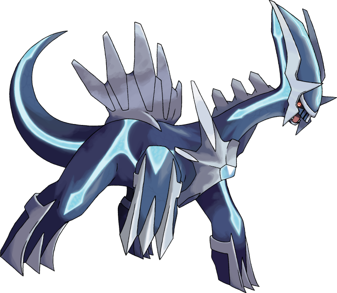
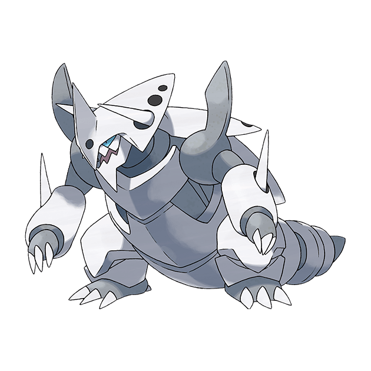
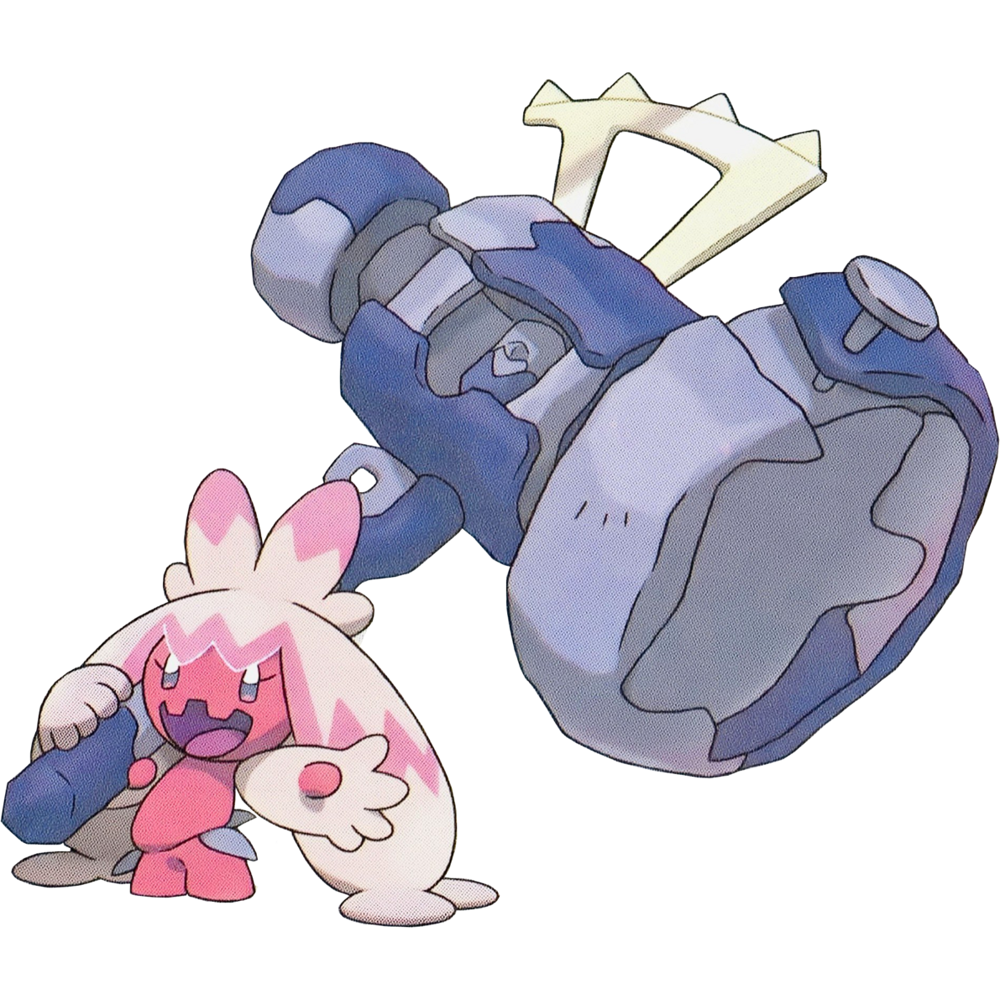
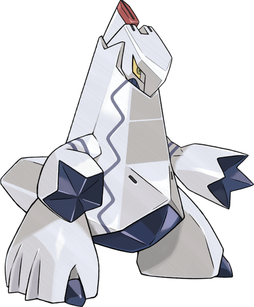
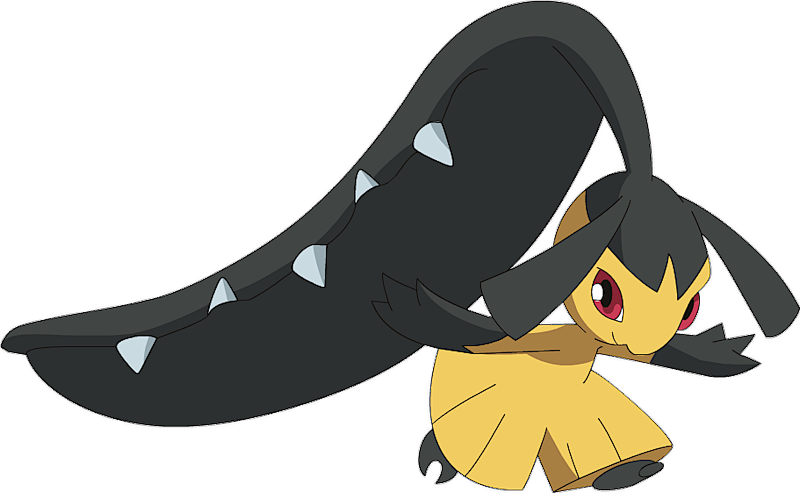

Steel type Pokèmon are hearty and tough. Steel is my second favorite typing as many of the designs are just cool.
The Pokèmon god of time. It has the coolest design I've come across in the series. It has a powerful Steel/Dragon typing putting together the defensiveness of Steel and the raw attack prowess of Dragon. Roar of Time is the most beautiful move I've ever seen. Even back in the original Diamond game it was beautiful.
I love the Aron line. And mega-evolution is my favorite gimmick that Pokèmon ever put out. In terms of megas, Mega Aggron isn't my favorite mega design, but by jove is it cool! The samurai helm with that armored bulk is super cool. While the rock typing does drag down steel's defensiveness, rock does bring some strong moves that get even more power with STAB (Same Type Attack Bonus).
A recent addition to the list, but it moved up quickly nonetheless. Its giant hammer brought it to the list and seeing it in action brough it to number 3. The combiniation Steel/Fairy typing is one of the, if not the, best in the game. It's just a pink puffball primed for violence! What's not to love?
It wasn't until Pokèmon Unite when I decided Duraludon was one of my favorite Pokèmon. I love the sleek metalic design, how the hands look like they'd slid together and you'd barely see a seam, and just the whole modern art vibe is fabulous to me. It matches typing with Dialga, but with weaker stats overall. More common, but weaker.
My former number 3. How it has fallen. But it still made it here. While I don't use this Mon in recent games, I still love the style of Mawile. The big terrifying maw of a mouth paired with a friendly and cute face is one of my favorite aesthetics.
